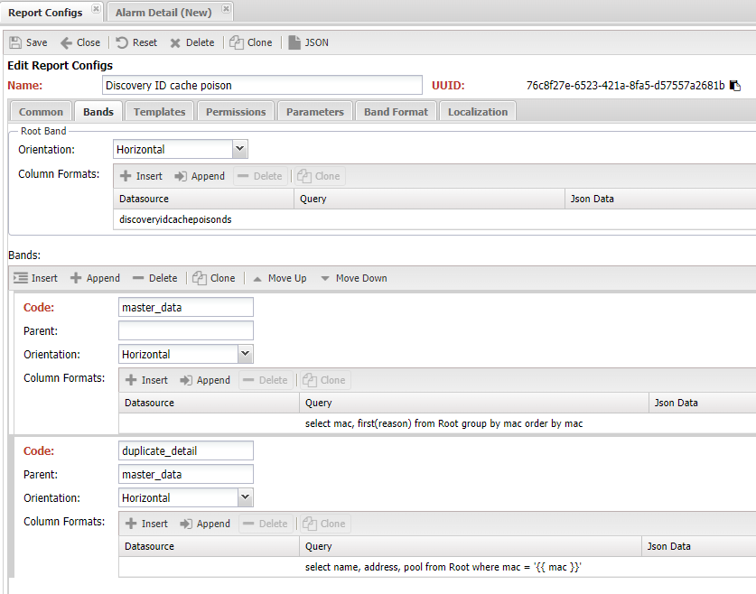
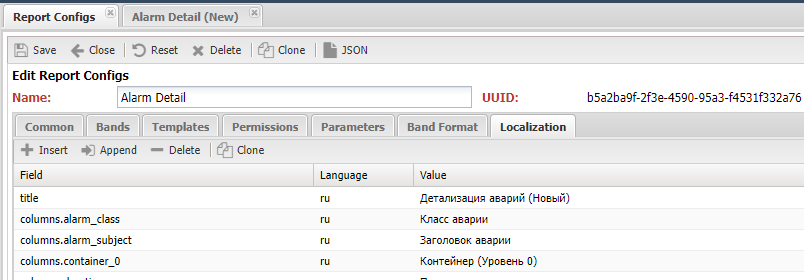
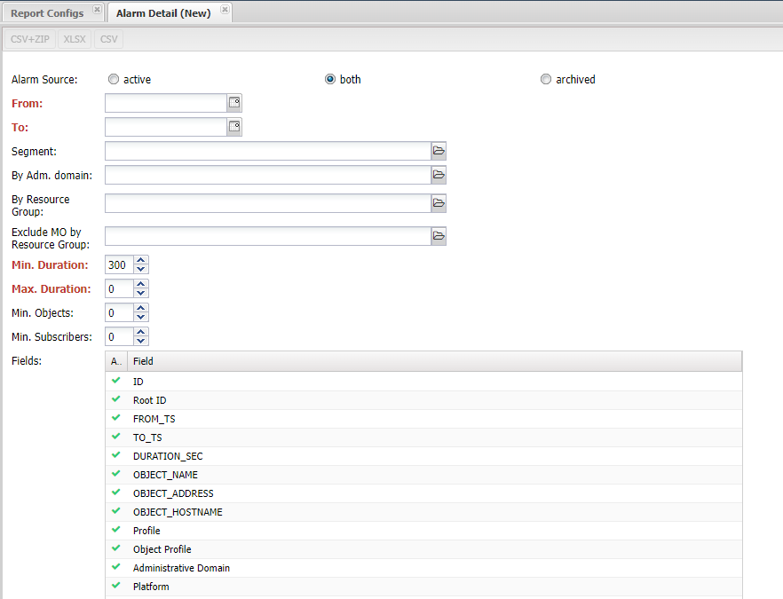

Выполнение отчётов в НОКе¶
Отчёты являются основным инструментом для пользователей в работе с системой. Поскольку они позволяют добывать интересующую информацию из системы и представлять её в читаемом виде. Поэтому состав доступных отчётов и формирование новых хорошо характеризуют какого рода задачи могут быть решены системой.
В НОКе, исторически, отчёты являются частью сервиса Web, отвечающего за взаимодействие с пользователями. На текущий момент есть 2 вида отчётов:
- Простые отчёты (SimpleReport). Делаются на базе кода, расположенного в веб-приложении Application и формируют HTML страницу с данными
- На основе настроек (Configured Report) - отчёты на базе конфигурации, расположенной в
Основные (Main) -> Report Config
Отчёты на основе настроек менее гибкие, чем Simple Report, но позволяют не писать код, если есть доступный источник (Datasource) для данных. Ниже будет идти речь именно о Configured Report, по Simple Report документация доступна В разделе про web .
Структура отчёта¶
- Отчётная область (Report Band) - область документа, в которой размещаются данные для отчёта. Таких областей может быть несколько и они могут включать друг друга с некоторыми ограничениями. В рамках такой области доступны для использования данные отчёта
- Родительская область (Parent Band) - вышестоящая область
- Root - имя корневой области отчёта, все остальные области так или иначе включены в неё.
- header - имя области, содержащей данные для формирования заголовка отчёта, не печатается в случае табличного вывода
- Область данных (Data Band) - данные для размещения в области отчёта. Содержит в себе наборы данных (Data Set) для вывода. При выводе отчёте, области с данными копируются в
Report Band - Набор данных (DataSet) области (Band). Содержит данные для вывода. Область может содержать несколько наборов данных. Один набор данных привязывается к одному
datasource - Тип набора данных (Data Set Type)
- Направление (Orientation) - направление копирования области с данными (Data Band)
- Горизонтальное (Horizontal) - копирование происходит сверху вниз. Может содержать встроенные области
- Вертикальное (Vertical) - копирование происходит слева направо. Не может содержать встроенные области (Band)
- Матричное (CrossBand) - копирование происходит по столбцам и строкам. Не может содержать встроенные данные
- Шаблон отчёта (Report Template) - документ с размеченными областями (Report Band) и указанными местами размещений данных.
- Автоматический шаблон (Auto Template) - формирование документа на основе настроек области (Band Format)
При работе с областями (Band) необходимо учитывать следующие особенности:
- Отчёт в своём составе содержит корневую (Root) область, остальные являются включённой в неё
- Каждая область (Band) может содержать один и больше наборов данных (Data Set) с присвоенными им именами
- Имя базового набор данных (Data Set) совпадает с названием области (Band)
- В момент обращения к данным наборы (DataSet) преобразуются в список строк (row), представляющих собой набор
column -> value - При выводе отчёта вложенные (Nested) области с данными, содержащими строки (row)
Любой отчёт имеет в своём составе корневую область (Root), в ней могут быть описаны данные (Data Set)
Источники данных (Datasource)¶
НОК собирает достаточно разнообразные по различным аспектам работы сети, дабы сделать удобной работу с ними в отчётах они сводятся в датасурсы (DataSource). Они представляют собой модули подготовки данных, в работе которых используется библиотека polars (аналог Pandas), результатом работы является структура DataFrame, поддерживающая различные манипуляции с данным, в том числе выполнение запросов SQL.
Info
Посмотреть доступные источники (Datasource) в системе можно командой ./noc report ds list. Выполнить запрос к нему можно командой ./noc report ds-query <QUERY>
Существующие Datasource доступны для использования при построении отчёта, они выбираются в меню Report Config на вкладке Области (Bands), там же можно задать SQL запрос в поле query.
Ручное использование Datasource¶
Помимо отчётов DataSource можно использовать для собственных нужд, например аналитики. Это доступно в консоли разработчика:
from noc.core.mongo.connection import connect
from noc.core.datasources.loader import loader
connect()
ds = loader["managedobjectds"]
r = ds.query_sync()
q.sql("select * from self")
Расширение доступных Datasource¶
Модули с источниками данных (Datasoure) расположены в папке core/datasources, поддерживается подключение собственных источников из custom, для этого необходимо выполнение следующих требований:
- Класс должен наследоваться от
noc.core.datasources.base.BaseDataSource - должен быть реализован метод
iter_query - Необходимо расположить модуль в папке
<noc_custom>/core/datasources - Имя должно быть уникальным и совпадать с названием модуля.
После выполнения условий источники (Datasource) доступен в ./noc shell через обращение loader[<name>]
Механизм построения отчёта¶
Сам процесс построение отчёта состоит из нескольких шагов, на вход первого шага поступает конфигурация отчёта (Report Config):
- Band - на базе конфигурации создаётся структура областей (Band)
- Data Set - созданная структура наполняется данными (Data Set)
- Document - на базе шаблона (Template) и данных (Data Band) формируется документа
- File - на базе документа создаётся файл выбранного формата
На выходе получаем печатную копию (файл) с заполненными данными. В зависимости от реализации функции-редактора файл может быть сформирован автоматически (на базе настроек), либо использовать предварительно загруженные шаблон с размеченными переменными.
Конфигурация отчёта¶

- Имя (name) - имя отчёта
- Категория (Category) - категория отчёта, используется для группировки
- (uuid) - глобальный идентификатор
- Описание (Description) - текстовое описание отчёта
- Код (Code) - уникальный текстовый код (для интеграции)
- Скрыть (Hide) - скрыть отчёт из списка пользователя. Используется для отчётов доступных по API
- Заголовок (Title) - название отчёта в меню. Если не заполнено, то используется имя
- (allow_rest) - разрешить выполнение по запросу через API. Отображается в списке доступных отчётов по API
- Параметры (Parameters) - набор параметров отчётов
- name - имя параметра. Под ним значение передаётся в отчёт
- description - описание параметра
- label - название на форме
- type - тип параметра
- integer - целочисленное значение
- string - строка
- date - дата (день)
- model - единичное значение из справочника
- model_multi - множественное значение из справочника
- choice - выбор из списка
- bool - логическое значение
- fields_selector - набор имён колонок
- required - обязательный для заполнения
- hide - скрыть с формы
- model_id - идентификатор справочника
- choices - список доступных значений
- default - значение по умолчанию
- Шаблоны (Template) - набор шаблонов для формирования отчёта
- output_type - формат итогового документа
- html
- csv
- csv+zip
- xlsx
- code - код шаблона
- content - файл шаблона
- output_name_pattern - шаблон имени файла
- is_alterable_output - доступны дополнительный форматы итогового документа (помимо указанного в output_type)
- has_preview - доступен предварительный просмотр отчёта
- handler - ссылка на собственную функцию для формирования файла отчёта
- Области (Bands) - список областей шаблона
- name - имя области
- parent - имя родительской область
- orientation - направление
- queries - данные для области
- datasource - указатель на источник данных (datasource)
- ds_query - SQL запрос к данным
- json - данные в формате JSON
- Формат областей (*Bands Format) - используется для автоматического формирования шаблона
- name - имя области
- title_template - шаблон заголовка
- column_format - формат колонок
- name - название колонки (совпадет с band)
- title - название колонки
- align - выравнивание
- format_type - тип значения
- total - подсчитать сумму
- total_label - название колонки с суммой
- Локализация (Localization) - перевод полей шаблона
Code-based report¶
В некоторых случаях возможностей конфигурации (Report Config) недостаточно чтобы описать структуру отчёта, тогда можно вернуться к описанию на базе кода. Для этого реализован механизм источники для отчёта (ReportSource).
Для его использования пишется модуль со следующим требованиями:
- Класс должен наследоваться от
noc.core.reporter.reportsource.ReportSource - должен быть реализован метод
get_data, который формирует области с данными Data Band - Метод
get_format, который возвращает настройки форматирования для областей - Модуль располагается папке
main/reportsources - Имя должно быть уникальным и совпадать с названием модуля.
Если требования соблюдены, в настройках отчёта (Report Config) в выпадающем меню Report source можно будет выбрать добавленный источник.
Подготовка документа¶
Создание документа на базе данных (Band) реализует функцию-редактор . Ей на вход передаётся корневая область (Root Band) и выбранных шаблон (Template). В процессе работы, переданные области размещаются в итоговом документе (Document).
В базовом наборе есть несколько функций-редакторов (Formatter) и возможно добавлять собственные:
- Класс должен наследоваться от
noc.core.reporter.formatter.base.DataFormatter - должен быть реализован метод
render_document, который формирует документ - Модуль располагается папке
core/reporter/formatters - Имя должно быть уникальным и совпадать с названием модуля.
SimpleReport¶
Редактор повторяет текущий механизм отчётов в НОК. Оформляет полученные данные в виде HTML страницы, аналогично виду текущих отчётов НОКа. Также, помимо HTML позволяет выводить в CSV.
Документ строится на базе информации из (Band Format).
- Область header выводятся в шапку документа
- Если в Band Format заполнен шаблон заголовка (Title Template), выведется заголовок таблицы
- Если в Band Format заполнены колонки таблицы (Columns Fomat), то выводится таблица с перечисленными столбцами
Для Simple Report доступны дополнительные форматы: CSV и XLSX
Custom¶
Собственный функции можно разместить в custom в папке <noc_custom>/core/reporter/formatters
Добавление отчёта в интерфейс пользователя¶
Добавление отчёта производится в интерфейсе пользователя Основные (Main) -> Конфигурация отчёта (Report Config). На вкладке областей (Band) заполняется структура и указываются источники данных (Datasource).

На вкладке Template выбирается шаблон отчёта, по умолчанию используется Simple Report для него не требуется указывать файл с разметкой, он строится на данных из раздела Band Format

На вкладке Band Formats описывается формат выводимых таблиц в области. Это позволяет автоматически формировать оформление без необходимости загрузки шаблона. Имя (Name) должно совпадать с таковым на вкладке Bands.

На вкладке разрешения Permissions настраиваются права пользователей и групп для отчёта. Доступны права на исполнение (Launch) и редактирование (Edit).
Локализация отчёта¶
На вкладке Localization задаются варианты строк для других языков. Доступны следующие варианты для перевода:
title- заголовок отчётаcolumns.<name>, где<name>- имя колонки из Bands Formatparameters.<name>, где<name>- имя параметра

Форма отчёта¶
Warning
После добавления (нового) отчёта необходимо перезапустить НОК, для его регистрации в меню навигации пользователя.
При открытии отчёта на экран выводится форма отчёта. На ней доступны действия и выбор параметров (Params Form). Набор действия зависит от настроек шаблона (доступных форматов файлов) и может быть следующим:
- Preview - вывести отчёт как HTML на экран. Доступна при отметке (Preview) в
- CSV - получить отчёт в виде CSV файла
- XLSX - получить отчёт в виде файла Excel

При настроенных параметрах отчёта (Report Params) на форме отображаются следующие элементы:
- integer - поле выбора номера
- string - текстовая строка
- date - выбор даты (с календарём)
- model - комбо-бокс со списком значений справочника
- model_multi - комбо-бокс со списком значений из справочника
- choice - радиокнопки, расположенные в строку
- bool - галочка
- fields_selector - таблица с перечнем колонок и отметкой выбора
API¶
Info
На текущий момент REST API для работы с отчётами не реализован
Для запуска отчётов из командной строки применяется команда ./noc report run.
Примеры отчётов¶
В составе системы есть встроенные отчёты, они описаны в меню Основные (Main) -> Конфигурация отчёта (Report Config). В них можно подглядывать в качестве примера.